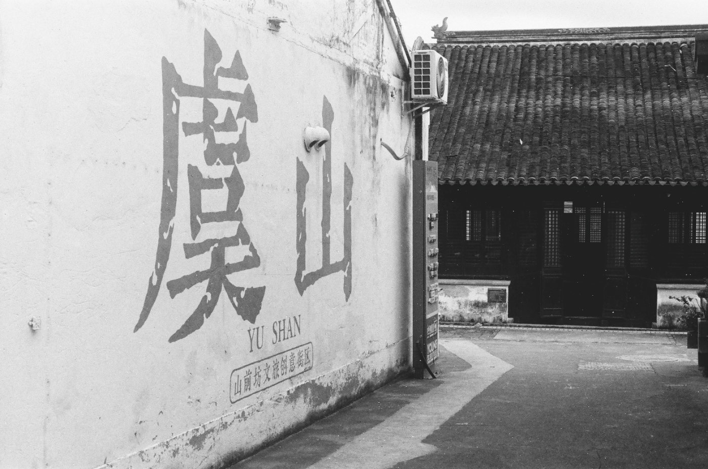

黑白胶卷：乐凯 SHD 400
一款重新回到市场的国产 ISO 400 黑白负片。价格不高、反差鲜明，也保留着一点不那么完美的胶片性格。
Personal Archive
这里保存一些照片、文字、器材折腾，以及我对日常生活的观察。摄影是入口，文字是线索，最后留下来的大概是一个人的观看方式。

一款重新回到市场的国产 ISO 400 黑白负片。价格不高、反差鲜明，也保留着一点不那么完美的胶片性格。

从阜成门沿虞山脚下走进山前街，在老街日常与新商业空间之间，记录一次夏日傍晚的黑白行摄。

一支陪伴我多年的经典标头。没有自动对焦，也没有现代镜头追求极致修正的锐利感，但它细腻的层次、自然的过渡，以及黑白影像中的表现，至今仍让我喜欢。

一台陪伴我十多年的经典 35mm 单反。明亮的取景器、轻触式快门，让它至今仍是我最喜欢用来拍黑白胶片的相机之一。

十多年前购入的一台入门级底片扫描仪，直到今天仍是我数字化胶片的主要工具。


A personal archive of photographs, notes and curiosities.